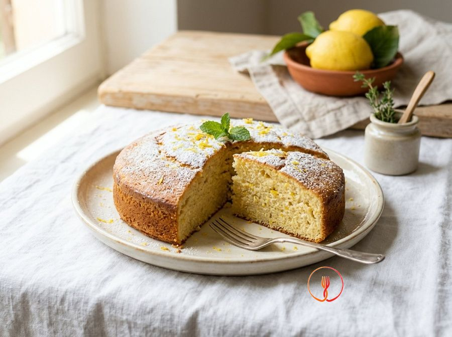

Soffice di Ricotta e Limone alla Contadina
Un dolce umido e profumato che si scioglie in bocca, tipico delle merende rurali italiane. La ricotta sostituisce gran parte dei grassi rendendo la torta leggera e proteica.
Un dolce rustico dalla struttura leggera, ideale per chi cerca un dessert semplice ma profumato. La ricotta vaccina dona un'umidità naturale all'impasto, esaltata dalle note agrumate del limone biologico.
Ingredienti
- Ricotta vaccina fresca250 g
- Zucchero semolato120 g
- Uova medie2 pz
- Farina tipo 00180 g
- Lievito per dolci16 g
- Limone bio (scorza)1 pz
- Latte parzialmente scremato30 ml
Allergeni
Glutine, Uova, Latte
Procedimento
- Per iniziare, preriscalda il forno statico a 180°C e rivesti accuratamente uno stampo da 20 cm con carta forno inumidita e ben strizzata. In una ciotola ampia, lavora 250 g di ricotta vaccina fresca con 120 g di zucchero semolato utilizzando una frusta a mano o una spatola morbida. Dovrai mescolare con energia per circa 2-3 minuti fino a quando i granelli di zucchero si saranno parzialmente sciolti e la ricotta avrà assunto una consistenza cremosa, liscia e vellutata. Il segreto è eliminare ogni possibile grumo della ricotta fin da questa fase iniziale per garantire una tessitura finale perfetta. Consiglio dello chef: se la ricotta è molto umida, lasciala scolare in un colino per 15 minuti prima di iniziare per evitare che l'impasto diventi troppo molle.
- Incorpora ora le 2 uova medie nel composto di ricotta, aggiungendone una alla volta e assicurandoti che la prima sia completamente assorbita prima di procedere con la seconda. Usa la frusta con movimenti circolari e decisi, incorporando aria per rendere il dolce più leggero e soffice. Continua a lavorare il mix per un paio di minuti fino a ottenere una crema densa e di un colore giallo pallido omogeneo. Noterai che la massa diventa più fluida e lucida, segno che le proteine dell'uovo stanno creando la struttura necessaria. Consiglio dello chef: usa uova a temperatura ambiente, poiché si legano molto meglio ai grassi della ricotta rispetto a quelle fredde di frigorifero.
- Prendi il limone biologico e grattugiane finemente la scorza direttamente sopra la ciotola, facendo attenzione a non prelevare la parte bianca amarognola. Mescola delicatamente con una spatola per distribuire uniformemente gli oli essenziali che sprigioneranno un profumo agrumato intenso e naturale. Questa operazione richiede solo pochi secondi, ma è fondamentale per caratterizzare il sapore 'alla contadina' del dolce. Il risultato sarà un impasto punteggiato di piccoli frammenti gialli estremamente aromatici. Consiglio dello chef: grattugia il limone all'ultimo momento perché gli oli essenziali sono volatili e perdono intensità se lasciati all'aria troppo a lungo.
- Prepara la parte secca setacciando 180 g di farina tipo 00 insieme a 16 g di lievito per dolci in una ciotola a parte. La setacciatura è un passaggio cruciale per evitare la formazione di grumi e per ossigenare la farina, favorendo una lievitazione più uniforme in forno. Una volta terminato, avrai una polvere finissima e impalpabile pronta per essere unita ai liquidi. Assicurati che il lievito sia distribuito bene nella farina per evitare zone di lievitazione irregolare. Consiglio dello chef: tieni il setaccio ad un'altezza di circa 20 cm dalla ciotola per incorporare ancora più aria durante la caduta della farina.
- Inizia ad aggiungere la farina setacciata al composto di ricotta e uova, alternandola con 30 ml di latte parzialmente scremato versato a filo. Usa una spatola e procedi con movimenti lenti dal basso verso l'alto per non smontare la massa e mantenere intatta la sofficità creata in precedenza. Continua così fino a esaurimento degli ingredienti, lavorando l'impasto per non più di un minuto dopo l'ultimo inserimento. Otterrai un composto denso, elastico e visibilmente aerato che ricade 'a nastro' dalla spatola. Consiglio dello chef: non lavorare eccessivamente l'impasto dopo aver aggiunto la farina, altrimenti svilupperai troppo glutine e la torta risulterà gommosa anziché soffice.
- Versa delicatamente l'impasto ottenuto nello stampo precedentemente preparato, utilizzando una spatola in silicone per recuperare ogni residuo dalla ciotola. Livella la superficie con il dorso di un cucchiaio bagnato o con la spatola stessa, senza schiacciare troppo la massa per non compromettere la lievitazione. Lo spessore dovrebbe essere uniforme su tutta la superficie per garantire una cottura omogenea in ogni punto. La tortiera da 20 cm permetterà al dolce di crescere bene in altezza, mantenendo un cuore umido. Consiglio dello chef: dai un paio di colpetti decisi con la tortiera sul piano di lavoro per eliminare eventuali bolle d'aria intrappolate sul fondo.
- Inforna la tortiera nel ripiano centrale del forno statico già caldo a 180°C e lascia cuocere per un tempo compreso tra i 35 e i 40 minuti. Durante la cottura, evita assolutamente di aprire lo sportello del forno per i primi 25 minuti per non causare sbalzi termici che potrebbero far sgonfiare il dolce. Osserva attraverso il vetro: la torta dovrà gonfiarsi e assumere un bel colore dorato intenso e invitante in superficie. Il profumo di limone e latte inizierà a diffondersi in tutta la cucina verso metà cottura. Consiglio dello chef: se noti che la superficie scurisce troppo velocemente dopo 25 minuti, coprila con un foglio di alluminio senza toccare l'impasto.
- Trascorsi i 40 minuti, esegui la prova dello stecchino inserendolo al centro della torta per verificarne la cottura interna. Se lo stecchino esce pulito e asciutto, la torta è pronta; se invece dovesse presentare tracce di impasto umido, prosegui la cottura per altri 5 minuti monitorando costantemente. La torta deve risultare soda ai bordi ma conservare una leggera elasticità al centro se premuta con un dito. Una volta cotta, spegni il forno e lasciala riposare all'interno con lo sportello socchiuso per circa 5 minuti. Consiglio dello chef: non preoccuparti se la torta si abbassa leggermente una volta fuori dal forno, è normale data l'alta percentuale di ricotta.
- Sforna il dolce e lascialo raffreddare completamente all'interno della tortiera prima di provare a rimuoverlo o sformarlo. La struttura della torta alla ricotta è molto delicata e instabile quando è calda; il raffreddamento permette ai grassi e agli zuccheri di stabilizzarsi correttamente. Dopo circa un'ora, apri lo stampo a cerniera o solleva con cura i lembi della carta forno per trasferire il soffice su un piatto da portata. Il risultato finale sarà un dolce rustico, profumato e incredibilmente morbido, perfetto per una colazione o merenda genuina. Consiglio dello chef: gusta la torta a temperatura ambiente o leggermente fresca di frigo per esaltare al massimo la nota citrica del limone.
Consigli
- Setaccia la ricotta prima di unirla allo zucchero per ottenere un impasto senza grumi.
- Assicurati che le uova siano a temperatura ambiente per favorire un'emulsione perfetta.
- Non aprire il forno durante i primi venti minuti di cottura per garantire una lievitazione ottimale.
Varianti
- Arricchisci l'impasto con delle gocce di cioccolato fondente per una versione più golosa.
- Spolverizza la superficie con zucchero a velo una volta che il dolce si è raffreddato completamente.
Valori nutrizionali (stima)
| Per porzione (153 g) | Per 100 g | |
|---|---|---|
| Energia | 1791 kJ / 428 kcal | 1171 kJ / 280 kcal |
| Proteine | 13.0 g | 8.5 g |
| Carboidrati | 66.4 g | 43.4 g |
| di cui zuccheri | 31.2 g | 20.4 g |
| Grassi | 11.3 g | 7.4 g |
| di cui saturi | 7.1 g | 4.6 g |
| Fibre | 1.2 g | 0.8 g |
| Sale | 0.42 g | 0.3 g |
Valori stimati con l'AI su dati medi CREA / USDA: sono indicativi e non sostituiscono il parere di un medico o di un nutrizionista.
Apri la ricetta nell'app per la lista della spesa, le schede ingredienti e i negozi vicini.